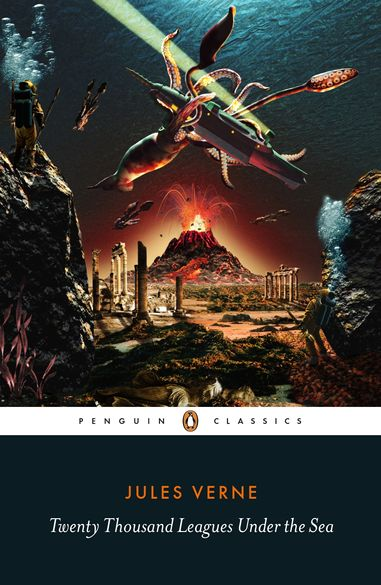

Jules Verne's science fiction novel Twenty Thousand Leagues under the Sea is his most popular book. Through Verne's detailed descriptions, we get to experience a futuristic life under the sea, filled with treacherous tales of all manner of sea creatures.
This book had a narrative that hooked you in, and made sure you were at the edge of your seat. The characters were compelling and likable, and it truly paints a fulfilling portrait of an adventure.
